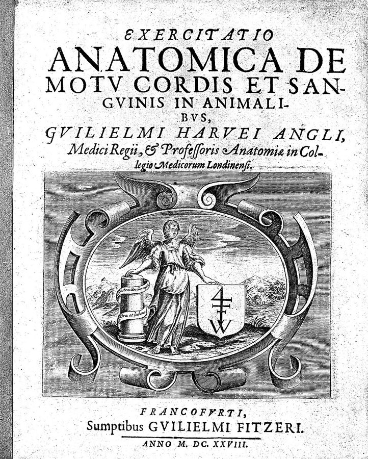
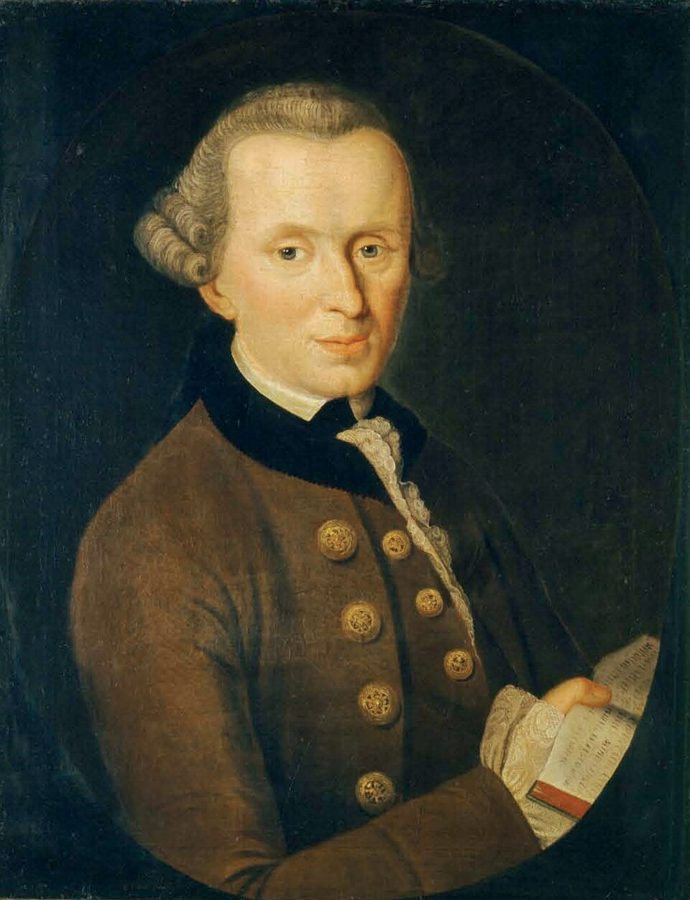
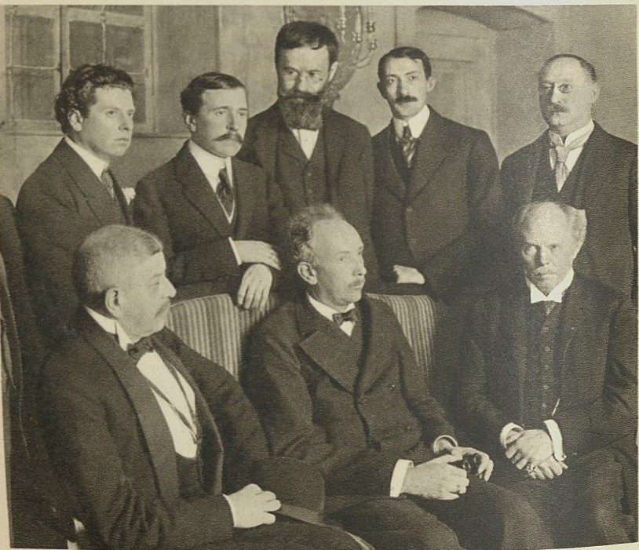

这一页在做什么
这是全书最后一页，尾声不分节。作者从拉丁词典上的一个巧合讲起：tempus 既是「时间」，又是「太阳穴」。词典编者说两者无关，他不服气，一路查罗曼语、德语词源和方言地图，再拐进古代医生的脉搏学，最后提出「时间感」这个概念。接着拿它和亚里士多德、康德、海德格尔三位哲学家对一遍，把最后一句话留给歌剧《玫瑰骑士》里元帅夫人的独白。读的时候抓一条线：作者要把时间安放到人的身体里。
1911 年《玫瑰骑士》首演时的元帅夫人，女高音 Margarethe Siems 扮演。这一页的最后一句话交给了这个角色。Hugo Erfurth，公有领域，维基共享资源
读之前：这一页在全书的哪里
第 9 章用一个个故事演示期限，到《罗拉快跑》的二十分钟为止。尾声不再讲故事，回到全书的第一页：01a 第 21 段说柏格森的问题留到尾声再谈，第 26 段说要用「希波克拉底的方法」看时间，这一页就是来兑现的。第 16 段让你回看第 1 章第 1 节，第 21、22 段让你回看第 8 章第 4 节，两处都指得对。第 24 段的「自巴尔扎克以来」，指的是第 2 章第 6 节的《三十岁的女人》。
全书一直说时间是「短」的。可时间凭什么原则上就短？作者要替「希波克拉底的时间」补一套理论，这套理论从哪里来？
读的时候带着这几个问题。不用先找答案，读完回来对照「检查一下理解」。
词典编者说两个 tempus 只是碰巧同形。作者拿什么反驳？哪几步是词典里查得到的，哪一步是他自己的假说？§1
作者说时间是一种「感官」。它的器官在哪里？为什么人平时感觉不到它？§1
对亚里士多德、康德、海德格尔，作者各是赞成、反对，还是有保留？§1
元帅夫人的独白里，哪一行正好接上前面的论证？§1
这一页的路线
尾声约三千五百词，四处花饰分隔把它分成五段。第一段（第 1–14 段）最长，像一篇语文学的侦探小说：从词典上的一个巧合出发，经过罗曼语、德语词源和方言地图，到第 7 段拐进医学史，最后得出「时间感」。第 9 段又跳回词源，是拿脉搏的节拍回头处理 tempus 的来历，读时容易以为跑题。后面三段都很短，一段对一位哲学家。最后一段交给歌剧，引的独白里正好有「太阳穴」，绕回第一段的起点。
第 1–14 段
15–18
19–20
21–22
23–30
两个 tempus
太阳穴和睡
方言地图
脉搏学
拍子的拟声
哈维
时间睡着
时间感
亚里士多德
康德
海德格尔
元帅夫人
本站示意图。蓝点是词源这条线，橙点是身体和医学这条线，绿点是三位哲学家，折线是阅读顺序，虚线是原书的四处花饰分隔，顶上是各段的段号。 作者落在哪： 时间首先是一种感觉，器官在身体里：旧说是太阳穴，今说是血液循环和脉搏。它平时睡着，在快不够的时候才醒。时间之所以短，归根到底是因为它朝着死亡；这一点作者同意海德格尔，但给年轻和健康的人留了余地。
分节地图
这一页是原书第 10 章，全书的尾声。尾声不分节，本站记作 §1。粗体是这一章的主角；斜体是英文开头的几个词，在电子书里搜它就能跳到那里；章里的转折用段号点出来。读完打个勾。
从太阳穴的词源到元帅夫人约 3500 词 At the beginning of this book … 第 13–14 段是全书的理论。第 15 段起对三位哲学家，第 23 段起是歌剧。
先用中文过一遍：这一页的概念
作者常常一笔带过、默认你懂的概念，这里先从书外讲一遍：它从哪来，是什么意思。它在这一页起什么作用，看每块最后一句。讲过的概念都汇总在概念汇总 。
§1 时间感 sense of time 西方传统说人有五种感官：视、听、嗅、味、触，各有器官长在身体表面。亚里士多德还讲过一种「共通感」（koinē aisthēsis，拉丁文 sensus communis），它不专管哪一样，而是把各感官送来的东西合在一起；这和今天说的「常识」不是一回事。至于时间，今天的心理学讲「时间知觉」，却找不到一个专管时间的器官：同样一分钟，发烧、紧张、无聊时感觉长短不同。说时间是一种感觉，就要回答两个问题：它是第六种感官，还是统领各感官的那一种？它的器官在哪里？
在这一页： 第 13–14 段，作者给前面词源和脉搏学的发现起名，把时间当成一种有身体器官的感官。第 20 段再拿它对照康德。
§1 先天的直观形式 a priori（康德） 拉丁文 a priori 是「从先前的」，指不靠经验、先于经验就有效的；a posteriori 是「从后来的」，指来自经验的。康德在《纯粹理性批判》开头的「先验感性论」里说：空间是外感官的形式，我们看外物，总已经把它放在空间里；时间是内感官的形式，我们觉察自己心里的状态，总已经把它排成先后。两者都是先天的，像一副摘不下来的眼镜，不是从经验里学来的。康德另有「统觉」（Apperzeption）一词，指「我思」把种种表象统一起来的自我意识，属于知性，和感官那一层分开讲。
在这一页： 第 19–20 段，作者先概括康德的时间论，再拿自己的「时间感」和它比：都算先天条件，差别在哪里。
这一页还用到别处讲过的几个概念：亚里士多德的时间定义 和柏格森的绵延 （第 9、16–18 段），生命时间 （第 11–12、30 段），向死存在 （第 11、21 段），林中路 （第 22 段）。
书里的人和作品
按在书里出现的顺序排，标题前是节号。作品只讲到读懂这一页需要的程度。
§1 词典、词源词典和方言地图第 2–6 段查了三种工具书。拉丁词典确实把「时间」和「太阳穴」分成两个词条。德语的说法有出处：Duden 的词源词典说 Schläfe 和 Schlaf 本是同一个词，因为人睡觉时多半枕着太阳穴，复数形式到 18 世纪才当单数用。方言地图出自注 1 的《意大利和南瑞士语言与事物地图集》（Jaberg 和 Jud 编，1928–40），作者查的是「太阳穴」那一幅。tempus 的词源到今天没有定论，注 3 也这样说；第 9 段那个拟声的说法，是作者自己的假说。
太阳穴
拉丁文 tempora
和 tempus（时间）同形
德文 Schläfe
来自 Schlaf（睡）的旧复数
南意大利、西西里 sonnu
来自拉丁文 somnus（睡）
北意—南法—加泰罗尼亚 pols
来自拉丁文 pulsus（脉搏）
本站示意图，据第 2–6 段。四种叫法都指太阳穴，却分别牵出时间、睡、脉搏。第 6 段的问题就是：这三样和太阳穴有什么关系？ §1 古代的脉搏学第 7–8 段点了三位医生。医学史上，把脉搏当成一门学问的通常归到希罗菲卢斯：据晚出的记载，他头一个用水钟数脉搏（水钟见 01a ），还拿诗的音步来比脉搏的节律。传在鲁弗斯名下的《脉搏概要》记下了这些说法，学界多认为是托名之作。书里第 8 段把按诗律分类脉搏归给鲁弗斯；第 7 段说系统的脉搏学尤其从希罗菲卢斯开始，第 18 段又说脉搏学是希波克拉底创立的。这三处口径不一，是书里自己的。
希罗菲卢斯 Herophilos，约前 335–约前 280 生在卡尔西登（Chalcedon，书里写 Chalcedonia），在亚历山大里亚行医、做解剖。第 7 段的「约公元前 300 年」说的是他活跃的年代。
以弗所的鲁弗斯 Rufus of Ephesus，约 1 世纪末–2 世纪初 希腊医生，不少著作只剩残篇或译本。第 8 段说他按诗和音乐的格律给脉搏分类。
Michele Savonarola 约 1385–约 1466 帕多瓦的医学教授，后来做费拉拉宫廷的医生，写过论脉搏的书；那位修士 Girolamo Savonarola 是他孙子。书里拼作 Savanarola，说他是 17 世纪人，其实是 15 世纪。
§1 哈维和血液循环英国医生哈维（William Harvey，1578–1657）1628 年在法兰克福出版《心血运动论》，证明血液由心脏推动、在全身循环。第 10 段的拉丁文引自这本书，意思是「脉搏不过是心脏推出去的血流」。作者从这里推出：心跳给全身定了同一个节拍，在哪里摸脉都一样，手腕最方便，医生就不再看重太阳穴了。注 4 说的 Antonius de Haen 是 18 世纪维也纳的医生，书里拿他的医书作证据，说早先的医生在身体多处摸脉。

哈维《心血运动论》1628 年初版的书名页，底下印着出版地法兰克福和年份 M.DC.XXVIII（1628）。Wellcome Collection，CC BY 4.0，维基共享资源 §1 康德和作者的两处出入康德（Immanuel Kant，1724–1804），《纯粹理性批判》1781 年出版，1787 年出第二版。第 19–20 段概括他的时间论，有两处和康德的通常说法不同。一是康德说时间是「内感官的形式」，书里写成「内在统觉的纯形式」，统觉在康德那里是另一回事（见概念块）。二是书里说外感官被康德称作 a posteriori；可在康德那里，外感官的形式空间同样是先天的，来自经验的是感觉材料。读第 20 段时把这两句放宽来看，作者真正要说的是后半段他自己的主张。

康德像，Johann Gottlieb Becker 1768 年画，那时《纯粹理性批判》还要再过十三年才出版。Johann Gottlieb Becker，公有领域，维基共享资源 §1 海德格尔和 Carlo Levi海德格尔（Martin Heidegger，1889–1976）和他的《存在与时间》（1927）第 8 章第 4 节讲过，见 向死存在 。第 12、22 段的 man（英译作 one）是他的术语 das Man，「常人」：日常里那个谁也不是的「人们」，「人总会死」这种说法替我们把死推开。第 22 段借了一句 Carlo Levi 的话，说的是「真正的时间」是我们内在的尺度，书里没有注出处。
Carlo Levi 1902–1975 意大利作家、画家、医生，最出名的是写流放南意大利乡村的《基督停在埃博利》（1945）。
§1 《玫瑰骑士》和元帅夫人《玫瑰骑士》（Der Rosenkavalier）是霍夫曼斯塔尔写脚本、施特劳斯作曲的三幕歌剧，1911 年 1 月 26 日在德累斯顿首演，副题「为音乐写的喜剧」。故事设在 18 世纪的维也纳。元帅夫人和年轻的情人 Octavian（她叫他 Quinquin）在一起，Octavian 才十七岁，后来爱上了年轻姑娘 Sophie。第 25–29 段的独白在第一幕。书里说元帅夫人约四十岁；施特劳斯 1942 年说过，她是个年轻漂亮的女人，最多三十二岁上下。作者拿她作例子，是因为她感到时间，不是因为生病，只是因为年龄差。
霍夫曼斯塔尔 Hugo von Hofmannsthal，1874–1929 奥地利诗人、剧作家，给施特劳斯写过六部歌剧脚本。第 9 章讲的《耶德曼》也是他写的。
施特劳斯 Richard Strauss，1864–1949 德国作曲家、指挥家，《玫瑰骑士》是他最常上演的歌剧之一。

《玫瑰骑士》1911 年首演时的合影。据图片说明，前排中间坐着的是施特劳斯，后排站着的有导演 Max Reinhardt、霍夫曼斯塔尔和舞台设计 Alfred Roller。Zander & Labisch，公有领域，维基共享资源 图里的引文
下面这几段在你的电子书里是图片，长按查不了词，也搜不到。每块先说它在屏幕上的位置，再逐行给中文意思；行首的斜体是图里这一行开头的几个词，用来和图对上。古人的诗本站据原作的语言译，不从英译转译。
§1 第 25–29 段 · 霍夫曼斯塔尔《玫瑰骑士》第一幕，元帅夫人的独白 · 前三张英译，后两张德文原文在第 24 段末尾（…from an artistic point of view:）之后，一连五张图：前三张是英译，后两张是德文原作。下面跟着德文逐行。两组在不同的地方断开：德文第一张的最后一行（In den Gesichtern…）对应英译第二张的第一行，英译第三张的两行对应德文第二张的最后两行。
Die Zeit im Grund, 时间说到底，Quinquin，die Zeit, die ändert 时间，它终究改变不了事情。Die Zeit, die ist 时间，是个奇怪的东西。Wenn man so hinlebt, 人只管这样过日子的时候，它根本什么都不是。Aber dann auf einmal, 可是忽然有一天，da spürt man nichts 除了它，什么也感觉不到。Sie ist um uns 它在我们周围，也在我们身体里面。In den Gesichtern rieselt 它在一张张脸上细细地流，在镜子里细细地流。In meinen Schläfen, da 在我的太阳穴里，它在流。Und zwischen dir und 在你和我之间，它又在流，Lautlos wie eine Sanduhr. 无声无息，像一只沙漏。Oh, Quinquin! 噢，Quinquin！Manchmal hör ich sie 有时我听见它在流，止也止不住。Manchmal steh ich auf 有时我半夜里起来，Und laß die Uhren 把所有的钟，所有的钟，都停下来。Allein man muß sich 可是人也不必怕它。Auch sie ist ein 它也是天父造的，der uns alle erschaffen 天父造了我们所有的人。
英译和德文的出入： 第 1 行的 im Grund（说到底）英译成 Really；第 9 行德文只说「在我的太阳穴里，它在流」，英译加了「我感到」；第 15 行的「所有的钟，所有的钟」重复了一遍，英译只有一次 all of them；第 16 行 muß nicht 在德文里是「不必」，英译 must not 读起来像「不许」。
im Grund
第 1 行
（德文）说到底，根本上
今天多写作 im Grunde。英译的 Really 只带出了语气。
ein sonderbar Ding
第 3 行
（德文）一样奇怪的东西
按规范语法应该是 ein sonderbares Ding，这里形容词没有词尾，是旧式、口语的说法。霍夫曼斯塔尔给这部戏的人物写了一种带旧时维也纳味道的德语。
hinleben
第 4 行
（德文）只管活下去，不加思索地过日子
hin 有「往前去」的意思。正好是第 12、22 段说的那种状态：时间还在太阳穴里睡着。
rieseln
第 8 行
（德文）细细地流、簌簌地落
说沙子、细雨、雪粒这样一点点往下落。沙漏里的沙就是 rieseln，第 11 行的沙漏早在这里埋下了。英译用 trickle。
Schläfen
第 1 行
（德文）太阳穴（复数）
就是第 5 段那个来自 Schlaf（睡）的词。作者在第 30 段特意指出，元帅夫人是在太阳穴里先感到时间在流。
laß die Uhren alle, alle stehn
第 7 行
（德文）让所有的钟都停下
主语是上一行的 ich（我），laß 是 lasse（我让）的口语缩写，stehn 是 stehen 的缩写。德文说钟「站住了」（die Uhr steht），就是钟停了。
Allein
第 8 行
（德文）可是，然而
放在句首当连词用，是书面的旧说法，不是「独自」。英译作 Nevertheless。
muß sich nicht fürchten
第 8 行
（德文）不必害怕
德文 muss nicht 是「不必」，不是英文 must not 那种「不许」。sich vor etwas fürchten 是「怕某样东西」。
Geschöpf des Vaters
第 9 行
（德文）天父的造物
Geschöpf 来自 schöpfen（创造），「被造之物」。说时间也是上帝造的，所以不必怕它。
词与短语
你用 Kindle，单个生词长按就能查，这里只收词典帮不上的：每个词都认识、合起来不懂的说法，学术腔，没翻译的外文，典故。斜体小字是原句里连续的几个词，错字照电子书原样，搜它就能跳到那里。图里的词在上面「图里的引文」里。
§1 从太阳穴的词源到元帅夫人
in short supply
… as human time it is in short supply.
短缺，不够用
经济学的说法，原指货物供不应求。作者整本书都把时间当成一种稀缺的东西，最后一段又用这几个词收尾。
little if any
… attracted little if any attention from …
几乎没有
字面是「就算有，也很少」。作者暗示：哲学家们一直没注意到语言史里的这些线索。
enter into detail
… not hesitate to enter into detail.
深入细节
不是「进入」什么地方。作者先打招呼：下面要讲词源的琐细，请耐心。
arbitrarily homophonic
… two different and arbitrarily homophonic words.
碰巧同音的
arbitrary 在语言学里说「没有理据的、偶然的」。这是词典编者的立场，作者接下来要推翻它。
as a philologist
If the reader, as a philologist, …
作为一个语文学家
philology 是从文献、词的历史研究语言和文学的学问，不同于今天的语言学。作者自己就是语文学家，这句假设读起来像在说他自己。
historical phonetics
… rules of historical phonetics, of the …
历史语音学
研究一个词的读音怎样一代代按规律变化。作者说 tempe、tempia 是从拉丁文复数 tempora 照这些规律变来的。
comes in pairs
… of the body comes in pairs, …
成对的
人有左右两个太阳穴，所以常用复数。抽象的「时间」多用单数。罗曼语两个词分了家，靠的就是这个单复数之别。
linguistic atlases
… our inquiry by examining linguistic atlases.
语言地图集
把同一个词在各地方言里的说法画在地图上。注 1 说作者主要用的是意大利和南瑞士的那一部。atlases 后面那个撇号是粘着的注号 1。
common denominator
… a theoretical common denominator for this …
共同的根由
本义是数学的「公分母」，引申为几样东西的共同点。
jumble of contingencies
… for this jumble of contingencies?
一堆乱糟糟的偶然
contingency 在哲学里是「偶然、并非必然」，不是「应急」。作者的问题是：这些巧合背后有没有一条道理。
the art of medicine
… successors in the art of medicine, …
医术
又回到全书第一句里的 art：能教能学的技艺，见
技艺 。
take the pulse
… many physicians still occasionally …
号脉，量脉搏
后面加了引号的就是这个说法。英文也用它的引申义「摸清情况」，如 take the pulse of the market。
prosodically sensitized
… art of a prosodically sensitized pulsology …
对韵律敏感的
prosody 是诗的格律学。作者的意思是：摸脉的医生要有诗人和乐手的耳朵。
rhythm, scansion, and prosody
… based on rhythm, scansion, and prosody.
节奏、分析诗行的格律、韵律
scansion 是把一行诗拆成一个个音步、标出轻重。三个词都在说「拍子」，为第 9 段的拟声假说铺路。
temnein
… related to the Greek verb temnein …
（希腊文）切
有的词典把 tempus 和它连起来，说时间是被切出来的一段。作者不信，反问时间里有什么可切，只想得到命运女神剪断的生命线（见
时间剪 ）。
onomatopoeic
… originally onomatopoeic words that with their …
拟声的
作者的假说：tempus、time 也许起初模仿的是敲鼓的 tam、tem、tim 声。他自己说这只是更可信的假说，不是定论。
if at all
… usually taken, if at all, only …
如果还量的话
插入语，往轻里说：今天的医生多半连脉都不量了。
orologio da polso
… the wristwatch (Italian orologio da polso) …
（意大利文）手表
字面是「手腕上的钟」，polso 既是手腕也是脉搏。作者顺手点出：今天戴表的地方，正是摸脉的地方。
in temporibus
… or more precisely at the temples …
（拉丁文）在两边太阳穴上
tempora 的复数变格。同一个词形也能读成「在某些时代」，这层重合是本站的看法，作者没点破。前面的 in carpo 是「在手腕上」。
less intimate
… easily accessible and less intimate wrist.
不那么私密的
intimate 在这里是「贴身的、私人的」，不是「亲密」。手腕伸出来就能摸，不用碰病人的头脸。
crisis
… in earlier times could not be broken …
（医学）病情的转折关头
前面加引号的 crisis 是古希腊医学的 krisis：病走到决定好转还是恶化的那一刻，不是今天泛说的「危机」。希腊文原义是「决断」。
a being toward death
… to use Heidegger's expression, a being …
向死存在
present to the senses
… it is (still) present to the senses.
感官感觉得到的
present 是「在场的」，不是「礼物」或「现在」。括号里的 still 接后文的 not yet exhausted：还感觉得到，说明还没耗尽。
conditio humana
… time from whose conditio humana we …
（拉丁文）人的处境
句子很绕：从这种时间所属的人的处境里，我们得出一个确定的认识，它是有限的。
one (Heidegger: man)
… (Heidegger: man) can still forget time …
人们，常人
man 是德文的「人们」，不是英文的 man。海德格尔把它变成术语 das Man，指日常里随大流、不去想死的那个「人们」。
Hautlichkeit
… own skin that Nietzsche called Hautlichkeit.8 …
（德文）皮肤感，「皮肤性」
Haut 是皮肤。后面粘着的 8 是注号，注 8 是译者 Rendall 的注，说它是从 Haut 派生的抽象名词。
Sinn der Zeit
… (Sinn der Zeit) can be said …
（德文）时间的意义，也是时间的感官
德文 Sinn 既是「感官」又是「意义」，Sinnlichkeit 是「感性」，康德也用这个词。作者在玩这个双关：时间的第一个「意义」就在于它是感官的。英文 meaning 只能带出一半。
sensus communis, bon sens
(sensus communis, bon sens) that is the …
（拉丁文、法文）共通感
前面加引号的 common sense 在这里不是「常识」，而是统合各感官的那一种感官，见概念块「时间感」。
creates or abolishes the presuppositions
… it creates or abolishes the presuppositions …
立下或取消前提
说得很抽象，意思是：脉搏一停，人就死了，别的感官也就都没有了。只有时间感管着生命的开头和结束。
tertium commune
… the tertium commune between space and …
（拉丁文）共同的第三项
两样东西拿来比较时，它们共有的那一点。在亚里士多德那里，把空间和时间连起来的是运动。
pote, pou
… immediately follows that of the category …
（希腊文）何时，何处
亚里士多德《范畴篇》列的十个范畴里的两个，「何处」排在「何时」前面。作者说连排列顺序都是先空间、后时间。
at most
… or if so, at most as the …
就算能，也顶多是
作者让了半步：人的时间如果非要说成空间里的运动，也只能是血在血管里的流动。
can hardly fail to endorse
Thus I can hardly fail to endorse …
不能不赞同
双重否定，口气是被论证逼到这一步。赞同的是柏格森对「空间化」的批评，见
绵延 。
anticipatory criticism
… an implicit anticipatory criticism of Aristotle.
预先的批评
希波克拉底比亚里士多德早，不可能批评他；作者是说，箴言和脉搏学的时间观事先就和亚里士多德对立。
pre-critical
… in the history of pre-critical philosophy to …
前批判的
康德的三大「批判」之前的哲学；也指康德自己 1781 年以前的著作。critical 在这里专指康德的批判哲学，不是「挑剔的」。
metaphysical dignity
… gives it an unprecedented metaphysical dignity …
形而上学上的地位
dignity 在这里是「身份、品级」，不是「尊严」。第 20 段的 a priori dignity 同样是「先天的地位」。
pure form of internal apperception
… and by defining it as a …
内在统觉的纯形式
后面加引号的这个说法，和康德通常的说法「内感官的形式」不一样：统觉在康德那里是自我意识，另是一回事。见概念块「先天的直观形式」。
fall back into
… we have fallen back into pre-critical thinking?
退回到
作者自问：说时间在身体里，是不是退回了康德以前？他答「当然不是」。
which Kant calls a posteriori
… senses, which Kant calls a posteriori.
康德称为后天的
这句和康德的通常说法有出入：在康德那里，外感官的形式空间也是先天的，后天的是感觉材料。见上面「康德和作者的两处出入」。
their days are numbered
… that their days are numbered.
来日无多
成语，字面是「日子是数过的」。常说成源自《诗篇》第 90 篇第 12 节「求你指教我们怎样数算自己的日子」，就是
02a 讲的那篇「人寿七十」。
opus magnum
In his opus magnum, Being and …
（拉丁文）代表作
更常见的写法是 magnum opus。
take care of itself
… inconspicuousness, take care of itself and …
自己照管自己，用不着人操心
作者的反问：让时间自己去，不管它，行不行？下一个词 incuria 接着说的就是「不操心」。
incuria
… readily legitimate this incuria: youth …
（拉丁文）不操心，漫不经心
in- 加 cura（操心、照料）。海德格尔把人的存在叫作 Sorge（操心），拉丁文就是 cura，incuria 字面上正是它的反面。这层对照是本站的读法，作者没点破。
whether questioned or not
… need-whether questioned or not-to know …
不管有没有人问
连字符其实是破折号。这几个词让人想到奥古斯丁《忏悔录》第十一卷那句：时间是什么？没人问我，我知道；要我向人解释，我就不知道了。作者没点名，是本站的联想。
for the time being
… for the time being counted among the …
暂时
普通成语，放在一章讲时间的书里就成了双关：年轻健康时不管脉搏，只是「暂时」的。
uncalledfor
… make an uncalledfor appearance and disturb …
不请自来的
就是 uncalled-for，电子书里连字符丢了。call for 是「要求、召唤」。
Vor-laufen
(Vor-laufen) whose path (Weg)-which may lead …
（德文）先行，向前跑
海德格尔的 Vorlaufen：先行到死亡那里去想自己的一生。作者用连字符拆开，让你看出 vor（前）和 laufen（跑）。英译 fore-running。
dead end (Holzweg)
… a dead end (Holzweg)-Martin Heidegger marked …
走不通的路（林中路）
英译取了 Holzweg 的日常义「死胡同、走错路」；海德格尔用的是另一层「林中伐木的路」，见
林中路 。这里说的是海德格尔标出的那条「先行」之路也许走不通，不是作者自己的路。
give the last word to
… fair to give the last word to …
让……来说最后一句
不是「给出最后一个词」。全书就这样在一段歌剧唱词上收尾。
comedy for music
… whose text was written by Hugo von …
为音乐写的喜剧
前面加引号的这几个词，是德文副题 Komödie für Musik 的直译。
since Balzac
… which since Balzac is no longer considered …
自巴尔扎克以来
指巴尔扎克的《三十岁的女人》把女人的「门槛年龄」往后推，见
02c 。
读不通的扫描错字：
… (Schla fe) is derived from an old plural … 应为 Schläfe（太阳穴），后面的 (Schla f) 应为 Schlaf（睡）。第 12 段的 Schla fen、schla ft，第 22 段的 Schla fe schla fen 都一样。… of Chalcedonia (c. 30o BC), … 应为 300 BC。… transmitted to our senses via the … 后面括号里的 typanum 应为 tympanum（鼓膜；希腊文本义是鼓）。… Being and Time (Sein and Zeit), … 应为 Sein und Zeit，德文的 und 被识别成了 and。
读完：作者到底说了什么
读完这一页的几节再看。下面是作者在这几节里的论点，由本站按论点重新组织，不按原书的顺序；每条右上角是依据所在的段落，拿不准就回书里那几段再读一遍。
「时间」和「太阳穴」不是碰巧同形 作者不接受词典编者的说法。罗曼语里两个词分家，只因一个来自单数、一个来自复数；德文的太阳穴来自「睡」，方言里太阳穴又叫「睡」和「脉」。串起这一切的，是古代医生在太阳穴上摸脉。他另提一个自认为更可信的假说：tempus 起初是拟声，模仿敲击的拍子。
§1 第 2–7、9、10 段 时间是一种有器官的感官，在快不够时最清楚 作者转述医生们的理论：时间平时「睡」在太阳穴里，发烧时脉搏加快，才被摸到、看到、听到。所以生命时间在它短缺的症状里体验得最清楚。他把时间理解为「时间感」，器官旧说是太阳穴，今说是循环和脉搏；它还是唯一管着生命始终的感官。
§1 第 11–14 段 时间是身体里的拍子，不是空间 亚里士多德把时间和空间配成对，和时间感不相容；作者说自己不能不赞同柏格森对「空间化」的批评，但他在第 9 段也说，无形地连续流动的绵延不可想象。康德把时间升为先天形式，却仍和空间配对；作者主张，以脉搏为节拍的时间感是另一种先天：身体性的先天。
§1 第 9、17–20 段 时间短，是因为它朝着死亡；但人有权暂时不管 作者表示基本同意海德格尔：日常的种种小短缺，都出自向死的那一种根本的短，并据此写下一句格言。他保留一点：年轻和健康的人有权让时间睡着。等身体发出信号，人未必知道时间的本质，却看清了它对我们做了什么。元帅夫人在太阳穴里感到时间流走，就是这样一刻。
§1 第 21、22、30 段
合起来： 全书第一页选了希波克拉底、不选亚里士多德，尾声替这个选择补上理由：时间是身体感到的拍子，又朝着死亡，所以原则上是短的。日常种种期限和小的短缺，都从这份短里来。
值得停下来的句子
Someone who has not internalized what makes time short does not yet know what time is.— §1 第 21 段。本站译：没有把「是什么让时间变短」化进自己身上的人，还不知道时间是什么。
作者自己说这是一句格言，全书从希波克拉底的格言开头，到这里用一句自造的格言收住。句子的分量落在两处：internalized 不只是「明白」，是化进自己里面，正好接前面说的「内」感官；not yet 留了余地，现在不知道，以后会知道。第 22 段马上替这个 not yet 辩护：年轻健康时不知道，也没什么不对。
Thus life-time is most clearly experienced in the symptoms indicating that it is in short supply.— §1 第 12 段。本站译：所以，生命时间在那些表明它已短缺的症状里，体验得最清楚。
主干是 life-time is experienced，most clearly 是程度，in the symptoms 是场合，后面的 indicating that… 修饰 symptoms。symptoms 是医学词，in short supply 是经济学词：一句话里把全书的两条线，医生的时间和经济的时间，接到了一起。
检查一下理解
先在心里答，再点开。答错的那题，回书里把对应那一节再读一遍。
1.（§1）在意大利文、法文里，「时间」和「太阳穴」为什么成了两个不同的词？这能不能证明两者无关？ 「时间」来自拉丁文单数 tempus（抽象名词多用单数），「太阳穴」来自复数 tempora（左右成对）。按读音变化的规律各自演变，才分了家。作者说这只说明形式分化了，不说明本来无关。
2.（§1）方言地图上的 sonnu 和 pols 为什么是关键证据？ 两个词都指太阳穴，一个来自拉丁文的「睡」，一个来自「脉搏」。加上德文 Schläfe 来自 Schlaf，问题就变成：时间、太阳穴、睡、脉搏四样有什么关系。
3.（§1）「时间睡在太阳穴里」是谁的说法？时间什么时候会醒？ 作者说这是医生们根据观察发展出的理论。重病发烧时，太阳穴的动脉鼓起来，加快的脉搏摸得到、看得见，夜里还听得见，这时病人才注意到自己的生命时间。病一好，又忘了。
4.（§1）第 9 段说绵延「不可想象」，第 18 段又说赞同柏格森。这矛盾吗？ 不矛盾。作者赞同的是柏格森对亚里士多德把时间「空间化」的批评；不接受的是把时间想成无形、连续流动的绵延。他心里的时间是有节拍的，像脉搏和鼓点。
5.（§1）作者的时间感和康德的时间，相同在哪里，不同在哪里？ 相同的是都被当作先天的条件。不同的是康德的时间是心里的纯形式，而且始终和空间配对；作者的时间感落在身体上，靠脉搏的节奏，提醒人日子是有数的。
6.（§1）作者对海德格尔有什么保留？ 作者基本同意时间的短来自朝向死亡。但他问：人非得知道时间是什么吗？年轻和健康的人有权不管它，让它在太阳穴里睡着；等身体发出信号，再去面对。
7.（§1）作者为什么挑元帅夫人的独白来收尾？ 作者说要让艺术说最后一句。元帅夫人不是生病，只是因为和年轻情人的年龄差，就在太阳穴里感到时间流走。她的唱词里正好有太阳穴，接上前面的整套论证：生命时间就是短缺的时间。
用一句话说这一页，写给一个没读过的人。
想一想：你上一次「感到」时间，而不是看表才知道时间，是什么时候？是什么让它醒过来的？读完这本书，你会想让它多醒着一点，还是像作者说的那样，趁年轻健康让它睡着？
精彩回顾
读过又忘了，从这里想起来。挑的是这一页最值得记住的人、说法和比喻，不按原书顺序；每条后面是节号，想细看就回书里那一节。全书各页的这一节都收在全书回顾 。
一句话： 尾声把全书的时间落到身体上：时间是一种以脉搏为器官的感觉，平时睡在太阳穴里，快不够的时候才醒，它短，是因为它朝着死亡。
两个 tempus 拉丁文 tempus 既是「时间」又是「太阳穴」。词典说碰巧同形，作者顺着词源和方言地图，找到太阳穴还叫「睡」和「脉」。
§1 时间睡在太阳穴里 医生们的说法：时间平时在太阳穴里睡着，发烧时脉搏加快，人才摸到、看到、听到它。病好了，又忘了。
§1 时间感 作者把时间当成一种感官：要么是第六感，要么是统领五感的共通感。器官旧说是太阳穴，今说是血液循环和脉搏。
§1 和三位哲学家对账 亚里士多德把时间配给空间，作者反对；康德把它升为先天形式，作者说还有身体的先天；海德格尔说时间朝着死亡，作者基本同意，只给年轻健康的人留了余地。
§1 半夜停钟的元帅夫人 《玫瑰骑士》里，元帅夫人在太阳穴里感到时间在流，有时半夜起来把所有的钟都停掉。全书最后一句话就落在她身上：时间短缺。
§1